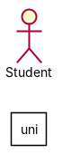
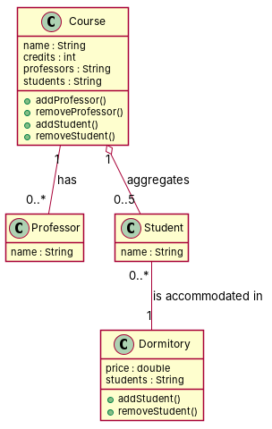

R1: This model represents some entities of a course. R2: We know that courses have a name and a specific number of credits. R3: Each course can have one or more professors, who have a name. R4: Professors could participate in any number of courses. R5: For a course to exist, it must aggregate, at least, five students, where each student has a name. R6: Students can be enrolled in any number of courses. R7: Finally, students can be accommodated in dormitories, where each dormitory can have from one to four students. R8: Besides, each dormitory has a price.
Red, struck-through: removed by ambiguity removal; green: added.
| actors (1 → 1) |
|---|
| student |
| classes (4 → 4) |
|---|
| Course |
| Dormitory |
| Professor |
| Student |
| attributes (6 → 6) |
|---|
| Course.credit |
| Course.entity |
| Course.name |
| Dormitory.price |
| Professor.name |
| Student.name |
| relations (2 → 2) |
|---|
| association: Course -> Student |
| has: Course -> Professor |
| id | req | type | cue | status | readings / explanation |
|---|---|---|---|---|---|
| A1 | R1 | quantifier | some | resolved | This model represents a single entity of a course.; This model represents multiple entities of a course. The term 'some' is ambiguous and could mean either a single or multiple courses. |
| A2 | R3 | quantifier | one or more | resolved | Each course can have one professor.; Each course can have one or more professors. The term 'one or more' is ambiguous and could mean either exactly one or multiple professors. |
| A3 | R4 | quantifier | any | resolved | Professors can participate in one course.; Professors can participate in any number of courses. The term 'any number of' is ambiguous and could mean either a single or multiple courses. |
| A4 | R6 | quantifier | any | resolved | Students can be enrolled in one course.; Students can be enrolled in any number of courses. The term 'any number of' is ambiguous and could mean either a single or multiple courses. |
| A5 | R6 | actor | passive 'enrolled' without agent | resolved | Students can enroll themselves in courses.; Students can be enrolled by a professor or administrator. The passive form 'enrolled' without an agent could imply either self-enrollment or enrollment by another actor. |
| A6 | R7 | actor | passive 'accommodated' without agent | resolved | Students can be accommodated in dormitories.; Dormitories can accommodate students. The passive form 'accommodated' without an agent could imply either students being accommodated or dormitories accommodating students. |


"""Code skeleton generated from the shared model of D4/uni.
Every class and method records the requirement(s) it traces to."""
from __future__ import annotations
import dataclasses as _dc
import enum as _enum
import typing as _t
@_dc.dataclass
class Course:
"""Source: R1, R2, R3, R5, R6"""
name: _t.Optional[str] = None
credits: _t.Optional[int] = None
professors: _t.Optional[str] = None
students: _t.Optional[str] = None
def addProfessor(self) -> None:
"""Operation."""
raise NotImplementedError
def removeProfessor(self) -> None:
"""Operation."""
raise NotImplementedError
def addStudent(self) -> None:
"""Operation."""
raise NotImplementedError
def removeStudent(self) -> None:
"""Operation."""
raise NotImplementedError
@_dc.dataclass
class Dormitory:
"""Source: R7, R8"""
price: _t.Optional[float] = None
students: _t.Optional[str] = None
def addStudent(self) -> None:
"""Operation."""
raise NotImplementedError
def removeStudent(self) -> None:
"""Operation."""
raise NotImplementedError
@_dc.dataclass
class Professor:
"""Source: R3"""
name: _t.Optional[str] = None
@_dc.dataclass
class Student:
"""Source: R5, R6"""
name: _t.Optional[str] = None
dormitory: _t.Optional["Dormitory"] = None
| python_compiles | True |
|---|---|
| java_compiles | True |
| attribute_mismatches | 0 |
| method_mismatches | 0 |
| use_cases | 0 |
| use_cases_without_actor | 0 |
| use_cases_without_method | 0 |
| actors_without_use_case | 1 |
| relations_to_unknown_class | 0 |
| inconsistencies | 1 |
| inconsistency_rate | 0.2 |
| requirement_coverage | 0.875 |
| validator fixes | |
| assumptions for open ambiguities | [] |
| element | P | R | F1 | TP/FP/FN |
|---|---|---|---|---|
| classes | 0.75 | 0.75 | 0.75 | 3/1/1 |
| attributes | 0.5 | 0.75 | 0.6 | 3/3/1 |
| relations | 0.667 | 0.667 | 0.667 | 2/1/1 |